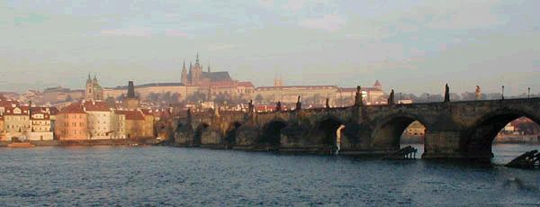
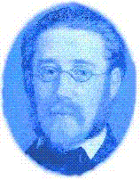

LA CITE D'OR
Ils furent or et sang les chants de ton enfance -
Un captif à son luth asservissant la tour,
Un aveugle au combat s'enchaînant sans retour,
Un prophète au bûcher couronnant sa défense.
Mais plus forte est la gloire et le temps ne l'offense
Lorsque la pierre prend des bouches le contour
Ou cantique, en espoirs s'incarne et flambe pour
Devenir le flambeau qui le porteur devance.
Le fort et le château veillent sur tes secrets -
Et qu'importe le prince imposant ses décrets.
Le Golem heurtera lorsque tournera l'heure.
Le sang du temps caillé frémira comme un coeur
Et le cri jaillira sur le fleuve, vainqueur,
Quand le fou -l'étoilé- rejoindra sa demeure.
Michel Galiana (c) 2005
THE GOLDEN CITY
Songs of gold, songs of blood used to lull your children:
A captive with his lute overpowered a fortress,
A man ever fighting in spite of his blindness,
A prophet whose cause was extolled by martyrdom.
But a stronger glory, a longer lasting one
Is ensured when it is proclaimed by mouths of stone
Singing an anthem that embodies hope and flames,
A torch shining ahead of the proceeding train.
The fort and the castle watch over your secrets.
It matters little which prince enacts his edicts,
If the Golem knocks when he deems the time has come.
And then, time's clotted gore shall boil, pulsed by a heart,
A cry of victory o'er the river shall start,
And the fool with the red star shall at last go home.
Transl. Christian Souchon (c) 2005
Notes :
Un captif... Peut-être une allusion à l'opéra de Smetana "Dalibor".
Dalibor était condamné à mort et emprisonné dans la tour du château
qui porte son nom (Daliborka) pour avoir aidé des rebelles.
En attendant son exécution, il jouait du violon et sa musique était
si prenante que les Praguois étaient saisis d'émerveillement, si bien
que les autorités n'osèrent annoncer la date de ladite exécution.
Les gens surent que Dalibor avait cessé de vivre le jour où le violon se tut
pour toujours.
L'association "luth" et "tour" est empruntée à Gérard de Nerval
("El Desdichado")
Un aveugle... Le Prince Jean de Luxembourg
dit l'Aveugle, devenu roi de Bohême en 1310. Il passa, malgré sa
cécité, sa vie sur les champs de batailles et mourut à Crécy en
1346 en combattant aux côtés des Français.
Un prophète... Jean Hus, prêtre, théologien et
professeur qui dénonça les abus de l'Eglise catholique.
Il fut excommunié, arrêté pour hérésie puis brûlé vif en 1415,
près de cent ans avant la Réforme.
Le fort et le château... le district dit "Hradschin" ou "Hradcany" qui
correspond au château de Prague et aux monuments qui l'entourent.
Le Golem... Au 1-ième siècle, sous le règne de Rodolphe II,
il y avait à Prague un vieux Rabbin nommé Judah Loew. A cette époque
les Juifs de Prague étaient persécutés et vivaient dans la crainte.
Le Rabbin Loew décida de les protéger des pogromes en créant
le Golem, un géant qui selon la Cabale on pourrait façonner avec
l'argile des bords de la Moldau. En suivant le rituel prescrit, le
Rabbin fabriqua le Golem et lui insuffla la vie en récitant certaine
incantation en Hébreux. Le mot "emet", signifiant "vérité", fut inscrit
sur le front du Golem..
Le Golem exécuta scrupuleusement les ordres du Rabbin et constitua
une aide considérabe pour le ghetto juif. Mais plus il grandissait, plus,
il devenait violent et il se mit à tuer les gens et à semer la terreur.
Le Rabbin obtint la promesse que les persécutions contre les Juifs
cesseraient, le jour où il détruirait le Golem. Affaire
conclue: en enlevant la première lettre du mot "emet", qui devenait ainsi
le mot "met" (signifiant "mort"), la vie fut ôtée au Golem. La légende veut
que le Golem ait été rappelé à la vie par le fils du Rabbin Loew et qu'il
continue à protéger Prague aujourd'hui encore.
C'est le thème du roman métaphysique de Gustave Meyrink.
(Source: http://www.myczechrepublic.com/prague/history/prague_legends.html)
Quand le fou, l'étoilé... L'occupant soviétique de l'époque:
La prédiction de Michel Galiana formulée avant 1989 s'est réalisée!
A captive... Possibly a reference to Smetana's opera "Dalibor".
Dalibor was sentenced to death and imprisoned in a tower of the
Prague Castle (Daliborka) for helping some rebels.
While waiting for his execution he would play his violin. and his music
was so beautiful that all the people of Prague were moved and enchanted
and the local authorities didn't dare announce the date of the execution.
People knew that Dalibor was dead when his violin fell forever silent.
The words "lute" and "tower" in Michel's text refer to Gérard de Nerval's
poem "El Desdichado".
A blind man... Prince John the Blind of Luxemburg,
who became King of Bohemia in 1310. Despite his infirmity
he spent most of his life on battlefields and died at Crécy
in 1346, fighting on the French side.
A prophet... The priest, theologian and professor John
Huss who denounced Church abuses.
He was excommunicated, tried and found guilty of heresy and
burnt at the stake in 1415, nearly 100 years before the Reformation.
The fort and the castle...the "Hradschin" or "Hradcany" District with the
Castle of Prague and the monuments surrounding it..
The Golem... In the 16th century, during the reign of Rudolf II,
an old Jewish man named Rabbi Judah Loew lived in Prague. During
that time, the Jewish people of Prague were being attacked and lived
their lives in fear. Rabbi Loew decided to protect the Jews against
pogroms by creating the Golem, a giant who according to the Cabala
could be made of clay from the banks of the Vltava. Following the
prescribed rituals, the Rabbi built the Golem and made him come to life
by reciting a special incantation in Hebrew. The word "emet", meaning
"truth", was placed on the Golem's forehead.
The Golem would obey the Rabbi's every order and would help and
protect the people of the Jewish Ghetto. However, as he grew bigger,
he also became more violent and started killing people and spreading
fear. Rabbi Loew was promised that the violence against the Jews
would stop if the Golem was destroyed. The Rabbi agreed. By removing
the first letter from the word "emet", thus changing it to "met" (meaning
"death"), life was taken out of the Golem. According to legend, the Golem
was brought back to life by Rabbi Loew's son, and may still be protecting
Prague today.
This is the topic of a metaphysical novel by Gustav Meyrink.
(Source: http://www.myczechrepublic.com/prague/history/prague_legends.html)
The fool with the red star... The socialist sovietic occupant at the time.
Michel Galiana's prediction (stated before 1989) eventually came true!
Listen to "The Golden City" in English

Commentaires générés par IA en 2026
Comments generated by AI in 2026
|
Cartographie des motifs — Le Golem, la prophétie, le martyre et l’imagerie soviétique dans le cycle pragois de Michel I. Les quatre motifs en tant que forces 1. Le Golem — la force latente de la ville Symbole de l’autodéfense mythique de Prague. Une créature d’argile, qui ne s’éveille que lorsque l’heure « tourne ». Représente la mémoire collective, la révolte latente et la capacité d’agir propre à la ville. Dans les poèmes de Michel, le Golem n’est pas un monstre mais un événement-seuil : le moment où Prague refuse le silence. 2. La prophétie — la voix de la ville projetée vers l’avenir Se manifeste à travers des bouches de pierre, des cantiques, des torches et des cris au-dessus du fleuve. La prophétie n’est pas l’apanage des seuls prophètes ; elle est portée par l’architecture, les statues, les ponts, les frontons. C’est la façon qu’a la ville de dire : l’avenir est déjà inscrit en nous. 3. Le martyre — la mémoire historique de la ville Le captif et son luth, le combattant aveugle, le prophète couronné par le bûcher. Ces figures sont les saints de la résistance pragoise ; non pas nécessairement chrétiens, mais civiques, légendaires et culturels. Le martyre est le prix de l’identité : la ville se souvient d’elle-même à travers la souffrance. 4. L’imagerie soviétique — l’étoile imposée L’étoile rouge marque le fou, le vagabond, l’âme déracinée. C’est l’emblème de l’occupation, de l’idéologie et de la rupture historique. L’imagerie soviétique n’est pas centrale, mais elle hante les poèmes : une ombre portée sur la continuité mythique de la ville. II. L’interaction des motifs A. Martyre → Prophétie Les martyrs de Prague (combattant aveugle, prophète sur le bûcher) deviennent des voix de pierre. Leur souffrance se transmue en cantiques, flambeaux, gestes architecturaux, cris au-dessus du fleuve. Le martyre devient une architecture prophétique. B. Prophétie → Golem La prophétie réveille le Golem. Les bouches de pierre de la ville proclament l’espoir et, lorsque l’heure tourne : Le Golem heurtera lorsque tournera l’heure. Le Golem est la matérialisation de la prophétie — l’instant où le mythe de la ville entre en action. C. Imagerie soviétique → Martyre L’étoile rouge désigne un nouveau type de martyr ni saint, ni prophète, mais un fou marqué par l’idéologie. Il est la victime moderne, errant dans le paysage mythique de Prague. D. Golem ↔ Imagerie soviétique Le Golem est la contre-force de l’étoile rouge. Là où l’étoile impose l’idéologie, le Golem impose la mémoire. Là où l’étoile marque la soumission, le Golem marque l’éveil. C’est là la tension centrale du cycle de Prague. III. L’arc narratif de la carte des motifs 1. Le passé : Le martyre Prague se souvient de ses héros — combattants aveugles, prophètes, captifs. Leur souffrance devient l’or intérieur de la ville. 2. Le présent : L’occupation soviétique L’étoile rouge apparaît. Le fou erre. L’histoire est interrompue. 3. La réponse de la ville : La prophétie Les bouches de pierre chantent. Les cantiques s’enflamment. Le flambeau précède celui qui le porte. 4. L’instant eschatologique : Le Golem Lorsque l’heure tourne, le Golem frappe. Il ne s’agit pas de violence, mais de révélation : la ville reconquiert sa puissance mythique. 5. La résolution : Le retour Le fou à l’étoile rouge « rentre chez lui ». Non pas vers l’idéologie, mais vers l’ordre mythique de Prague, où souffrance, prophétie et révolte sont réconciliées. IV. Synthèse finale Le cycle pragois de Michel est un palimpseste politique et mythique : Le martyre confère à la ville sa mémoire. La prophétie donne à la ville sa voix. L’imagerie soviétique inflige à la ville sa blessure. Le Golem apporte à la ville sa réponse. Ensemble, ils dessinent une trajectoire unique : Souffrance, Silence, Occupation, Prophétie, Éveil, Retour. Telle est Prague vue par Michel : une ville où le mythe et l’histoire fusionnent, où la pierre parle, où le temps a du sang, et où même le fou marqué de l’étoile rouge finit par être reconquis par la vérité profonde de la cité. |
Motif Map — Golem, Prophecy, Martyrdom, Soviet Imagery in Michel’s Prague Cycle I. The Four Motifs as Forces 1. The Golem — the latent force of the city, Symbol of Prague’s mythic self defence. A creature of clay, awakened only when the hour “turns.” Represents collective memory, latent revolt, and the city’s own agency. In Michel’s poems, the Golem is not a monster but a threshold event: the moment when Prague refuses silence. 2. Prophecy — the city’s voice projected forward Appears through stone mouths, canticles, torches, and cries over the river. Prophecy is not spoken by prophets alone; it is spoken by architecture, statues, bridges, pediments. It is the city’s way of saying: the future is already inscribed in us. 3. Martyrdom — the city’s historical memory The captive with his lute, the blind fighter, the prophet crowned by the pyre. These figures are Prague’s saints of resistance, not necessarily Christian but civic, legendary, and cultural. Martyrdom is the price of identity: the city remembers itself through suffering. 4. Soviet Imagery — the imposed star The red star marks the fool, the wanderer, the displaced soul. It is the emblem of occupation, ideology, and historical interruption. Soviet imagery is not central but haunts the poems: a shadow over the city’s mythic continuity. II. How the Motifs Interact A. Martyrdom and Prophecy The martyrs of Prague (blind fighter, prophet on the pyre) become voices in stone. Their suffering is transmuted into canticles, torches, architectural gestures, cries over the river. Martyrdom becomes prophetic architecture. B. Prophecy and Golem Prophecy awakens the Golem. The city’s stone mouths proclaim hope, and when the hour turns: Le Golem heurtera lorsque tournera l’heure. The Golem is the materialization of prophecy — the moment when the city’s myth acts. C. Soviet Imagery and Martyrdom The red star marks a new kind of martyr; not a saint, not a prophet, but a fool branded by ideology. He is the modern victim, wandering through Prague’s mythic landscape. D. Golem and Soviet Imagery The Golem is the counter force to the red star. Where the star imposes ideology, the Golem imposes memory. Where the star marks submission, the Golem marks awakening. This is the central tension of the Prague cycle. III. The Narrative Arc of the Motif Map 1. The Past: Martyrdom Prague remembers its heroes — blind fighters, prophets, captives. Their suffering becomes the city’s inner gold. 2. The Present: Soviet Occupation The red star appears. The fool wanders. History is interrupted. 3. The City’s Response: Prophecy Stone mouths sing. Canticles flame. The torch precedes its bearer. 4. The Eschatological Moment: Golem When the hour turns, the Golem strikes. This is not violence but revelation: the city reclaiming its mythic agency. 5. The Resolution: Return The fool with the red star “goes home.” Not to ideology — but to Prague’s mythic order, where suffering, prophecy, and revolt are reconciled. IV. Final synthesis Michel’s Prague cycle is a mythic political palimpsest : Martyrdom gives the city its memory. Prophecy gives the city its voice. Soviet imagery gives the city its wound. The Golem gives the city its answer. Together, they form a single arc: Suffering, Silence, Occupation, Prophecy, Awakening, Return. This is Prague as Michel sees it: a city where myth and history fuse, where stone speaks, where time has blood, and where even the fool marked by the red star is ultimately reclaimed by the city’s deeper truth. |